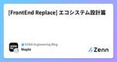

SODA Engineering Blogのフィード
https://zenn.dev/p/team_soda
株式会社SODAの開発組織がお届けするZenn Publicationです。 是非Entrance Bookもご覧ください！ → https://recruit.soda-inc.jp/engineer
フィード

[FrontEnd Replace] エコシステム設計篇
SODA Engineering Blogのフィード
こんにちは。FE チームの Maple です。あなたは今、フロントエンド開発の迷宮で道に迷っていませんか？ライブラリの選定、アーキテクチャ設計、テスト戦略...様々な選択肢に囲まれ、何を選べば良いのか頭を抱えていることでしょう。私たちのチームは、まさにそんな迷宮を抜け出すための"地図"を手に入れました。今回は、私たちが新しいフロントエンド環境の刷新にあたって辿り着いた、理想的なエコシステム設計についてお伝えします。 なぜエコシステム設計が重要なのかフロントエンド開発は、単に React や Vue といったフレームワークを選ぶだけでは終わりません。真の開発効率と持続可能性は、...
3日前

GASでMagicPodにアップロードされた複数のアプリを削除する
SODA Engineering Blogのフィード
こんにちは。SODAでクオリティエンジニアをやっているokauchiです。今回はMagicPodにアップロードされたアプリをUIに頼らずGASで削除するというテーマになります！紹介するのはモバイルアプリ版ですが、Web版も似たような仕組みで実装できるかもしれません。以下のGASを作成しようfunction deleteMagicPodFilesFromSheet() { // 設定 const API_KEY = 'YOUR_API_KEY'; // ← ここに取得したAPIキーを入力 const ORGANIZATION_NAME = "YOUR_ORGANIZAT...
20日前
AIで大規模ライブラリ移行を完遂させるテクニック
SODA Engineering Blogのフィード
一行まとめ最初に諸々の手続き・ルール・注意点を含んだプロンプトを完成させて、記憶がない（新規スレッド）の状態からでも期待するアウトプットが出る状態にする 補足技術的負債脱却など諸々の目的でライブラリ移行を行うことがしばしばあるが、そのライブラリが大規模なプロジェクト全体で使われているような場合は、広範囲にわたる変更が必要になる。人間の手を入れるのはデグレのリスクが高まる一方でその多くは単純な置換であることから、AIに作業させることで、理想的にはミスは減るし、人間はより高度なタスクに集中できる。しかしAIに適当なプロンプトを投げると間違った変更を加える可能性があり、結局は人...
21日前
CTOやめました
SODA Engineering Blogのフィード
執行役員 CTO を辞任し、VP of Technology として再出発します2025 年 4 月より、僕は株式会社 SODA の執行役員 CTO を辞任し、開発部署のマネージャーとして VP of Technology（VPoT）という役割に専念することを選びました。まずは自ら代表に相談し、その後経営会議での議論を経て決定しました。 自分の強みをもっと活かし、伸ばすことに時間を使うこの決断の背景は単純です。自分の強みをもっと活かし、伸ばすことに時間を使ったほうが会社の成長に貢献できると考えたからです。執行役員として過ごした時間は非常に貴重で学びの多いものでした。しかし、...
23日前
APIを安全にリプレイスするために統合テストの副作用を真面目にチェックする
SODA Engineering Blogのフィード
APIを安全にフルリプレイスするためには？結論：リプレイス前後のAPIを外から呼び出し、入出力と副作用について挙動が変わらないことを確認する技術的負債返済のためにAPIをリプレイスすることが多々あるが、危険なのはリプレイス後のAPIに特化したテストしか書かないことである。それでは仕様の見落としなどにより挙動の変更を入れ込んでしまうリスクが高まる。リプレイス前後の両方のAPIに共通で使えるテストを充実させたい。そうするとAPIを外から呼び出すような統合テストが欲しくなる。 どうやって副作用を確認するのか？入出力のテストはどんなツールでも難なく行えるはずだが、副作用についてはア...
23日前
[Zenn Books] コードで比較！ React19を執筆しました。
SODA Engineering Blogのフィード
こんにちは。FEチームのMapleです。私たちのチームは、現在のアーキテクチャを見直し、Reactを用いた新しいアーキテクチャへの移行を行うプロジェクトを開始しました。React19の知見をチーム全体で向上させるため、読み合わせの為に執筆を行いました。 初のZenn Books執筆https://zenn.dev/maple_siro/books/78697879365809React 19では、様々な機能が追加されています。 説明する記事を書こうと思ったら、相当行数になりそうだな〜と思ったのがきっかけですね。チャプターで分かれているので、見やすさもあると思います。以下で...
1ヶ月前
[ECサイトのテスト自動化落とし穴]出品と購入、リトライの落とし穴
SODA Engineering Blogのフィード
こんにちは。SODAでクオリティエンジニアをやっているokauchiです。今回は、出品から購入までの一連の流れをE2Eテスト自動化した時の失敗談をお話しします！出品から購入までのテストシナリオ作成ECサイトのテスト自動化において、出品から購入までの一連の流れをテストするシナリオはとても重要です。なぜなら、このシナリオはECサイトの中核となる機能を確認し、ユーザーが実際に行う操作をトレースすることで、より実際の出品・購入体験に近いテストを行うことができるからです。以下に、基本的なテストシナリオの例を挙げます。商品出品:管理画面にログインし、商品を新規出品する。商品のタイ...
1ヶ月前
あなたのUI/UXを上げる "アニメーション" の基礎
SODA Engineering Blogのフィード
こんにちは！最近Zennで本を出版しました！ 🚀🚀🚀アニメーションを始めとした、ユーザー体験をこだわりたいと思って書いた本です！ただ、ごめんなさい、有料にしちゃってるので、まずこの記事読んでもらって面白いと思ったら、ぜひ本を購入を検討してくれると嬉しいです！https://zenn.dev/imajoriri/books/2ab1be474e53c8では本編です！！ はじめに。素晴らしい見た目のアプリでも、アニメーションがダサいと急にアプリのクオリティが低く見えてしまいます。アニメーションは「なんかカッコイイ」を表現するだけではなく、ユーザーにとっての使いやすさにも影響...
1ヶ月前
より良いユーザー体験を求めて"カラー"を深掘る
SODA Engineering Blogのフィード
多くの開発で以下のような課題に直面したことはありませんか？Color.greyや#F5F5F5など、具体的なカラー値をハードコードしているデザインと実装でカラー名の定義が異なるアクセシビリティを考慮したカラー設計になっていない本記事では、カラーの設計方法やアクセシビリティのコードテストについて深掘りしていきます。!最近本を出しました！この記事の内容に興味持ってもらえたら、きっと面白いと思ってもらえるはずです！https://zenn.dev/imajoriri/books/2ab1be474e53c8 運用しやすいカラー設計を考えるエンジニアがデザイナーを巻...
2ヶ月前
Flutterのスキルを上げるにはIssueを見る 〜キャッチアップの実践方法〜
SODA Engineering Blogのフィード
エンジニアは一生勉強と言われますが、最新情報やトレンドをいち早くキャッチアップするにはどうすれば良いのでしょうか?今回は私が普段得ている情報源を紹介します。この記事ではFlutterに特化していますが、別の技術でも応用可能だと思います。!最近本を書きました。この記事を面白いと思ってもらえたら、立ち読みしていただく価値はあるかなと思います。詳細はこの記事の最後の方に記載しています。https://zenn.dev/imajoriri/books/2ab1be474e53c8 Flutter公式のIssue、Pull requestFlutter公式のIssue、Pul...
2ヶ月前
LLMで商品推薦をしてみたい
SODA Engineering Blogのフィード
背景: LLM を商品推薦に応用できないだろうか？自社のECサイトに、Item 2 Item, User 2 Item的な商品推薦を実装したい従来推薦システムの構築には膨大な行動データが必要だった。しかし、自前で膨大な行動データを持っていなくとも、LLM の膨大な訓練データを使えば、相応の商品推薦システムが作れるのではないか？更にLLMは推薦理由を自然言語で述べられるので推薦に付加価値をつけられるのではないか？この記事では作ったPoCの解説と今後の展望を述べる。 PoCプロンプトに入力した文字列からファッションを推薦してくれるスニーカーダンクはスニーカー・アパレ...
2ヶ月前
生成AIに外部APIの結果出力をお願いしたら驚くほど簡単だった話
SODA Engineering Blogのフィード
こんにちは。SODAでクオリティエンジニアをやっているokauchiです。今回は、生成AIとGAS（Google Apps Script）を組み合わせて、E2Eテスト自動化ツールのテスト実行結果収集を爆速化した体験談をシェアしたいと思います。 きっかけは「APIのスクリプト作成ダルい…」エンジニアの仕事は知識の広さと深さ、自社プロダクトだけでなく開発言語や利用するサービスについての知識も必要で、脳内のスイッチングコストもバカにならないですよね。そうなるとやはり手作業は減らしたいところですが、自動化するコストが高いと思い込んでしまうとなかなか腰が重いもの。例えばE2Eテスト自動化ツ...
2ヶ月前
【書籍購入補助】Learning制度って利用されてるの？2024年版
SODA Engineering Blogのフィード
この記事は？SODAでは書籍購入補助という福利厚生があります！毎年振り返っているのですが、今年はどんな使い方がされたか、どんな本が読まれたか紹介できればと思います！ Learning制度を改めてご紹介Learning制度とは、SODA社員の成長の為、書籍購入など学習に必要な費用を会社が負担してくれるという福利厚生です。1人あたり月に1万円までの費用を経費精算することができ、kindleやpdfなどの電子書籍はもちろん、Udemyや語学サービスの受講などを申請することも可能です。また、退職時に会社への返却義務があるところが多いですが、SODAでは私物として返却する必要はあ...
3ヶ月前
第7回 FlutterGakkaiにスポンサーをしてきました
SODA Engineering Blogのフィード
2月7日に新宿にてオフライン・オンラインのハイブリッド開催の第7回 FlutterGakkaiにスポンサーをしてきました。https://fluttergakkai.connpass.com/event/340287/ FlutterGakkai とはFlutterGakkkaiはFlutterをもっと好きになれる場所をコンセプトに有志で開催している勉強会です。Flutterを盛り上げるために企業エンジニアの垣根を越えて交流ができる場を目指します。https://fluttergakkai.connpass.com/ 協賛した背景SODAはMAU600万人超えのスニーカ...
3ヶ月前
あなたのUI/UXレベルを上げるニッチなPackageたち。
SODA Engineering Blogのフィード
宣伝こんにちは！最近Zennで本を出版しました！ 🚀🚀🚀ユーザー体験をこだわりたいと思って書いた本です！ただ、ごめんなさい、有料にしちゃってるので、まずこの記事読んでもらって面白いと思ったら、ぜひ本を購入を検討してくれると嬉しいです！https://zenn.dev/imajoriri/books/2ab1be474e53c8では本編です！！ はじめに仕事や個人開発で作っているプロダクトのユーザー体験を1つ成長させるPackageを紹介します。「こんなpackageあります」とデザイナーに提案してみても良いかもしれません。!今回紹介するpackageは個人開発...
3ヶ月前
MySQL アップグレード(5.7 → 8.0）の話
SODA Engineering Blogのフィード
こんにちは。SODAのSREチームです。この記事でメインデータベースを MySQL 5.7 から MySQL 8.0 (Aurora MySQLv2からv3) にアップグレードした話を紹介させていただきます。 背景2024年10月31日をもって、AWS は Aurora MySQL 5.7 のサポートを終了しました。サポート終了の1ヶ月後から延長サポートの費用が発生するため、Aurora MySQL 5.7を使用していた我々のデータベースをアップグレードする必要がありました。そのデータベースクラスターには下記の特徴があります。データベースの容量は約1TB最もサイズが大き...
4ヶ月前
[テスト自動化の落とし穴]テストシナリオ実装は2段階ある！
SODA Engineering Blogのフィード
こんにちは。SODAでクオリティエンジニアをやっているokauchiです。今回は、テスト自動化でのハマりポイント、ステークホルダーとのコミュニケーションでの落とし穴を紹介します！ テストシナリオ作成完了=運用開始可能？E2Eテスト自動化の仕組みの導入が進み、作成すべきテストシナリオも抽出が出来、「よーし、ここからはひたすらにテストシナリオを作っていくぞ」というところまで進みました。ノウハウや共通処理がない中でも自分達が手動でやっていくものが自動化されていく様はなかなかに爽快です。ちょっと長めのテストシナリオを作ったら誰かに自慢したくなったり、５つぐらいテストシナリオを作ったら、こ...
5ヶ月前
2024年のふりかえり、顕在化した大きな課題、2025年の目標
SODA Engineering Blogのフィード
はじめに＼スニダンを開発しているSODA inc.の Advent Calendar 2024 25日目の記事です!!!／こんにちは、SODAでCTOをしています @rinchsan です。この記事では、SODAのエンジニア組織における今年の大きなトピックをいくつか紹介しつつ、今後の課題も話したいと思います。 2024年は準備の年でした CTO室のスタート今年9月、機械学習や生成AIなどを有効活用して非連続な価値創出の実現を目指す、CTO室というチームを立ち上げました。2024年のCTO室の活動としては、まだまだ準備段階な部分が多く、CTO室としての最初の大きな成果...
5ヶ月前
今さらMySQL8の新機能を眺めてみる
SODA Engineering Blogのフィード
!＼スニダンを開発しているSODA inc.の Advent Calendar 2024 25日目の記事です!!!／ はじめにみなさんこんにちは。メリークリスマス🎅弊社が提供するサービスSNKRDUNKは先日ようやくMySQL8にアップグレードが完了しました。どのようにアップグレードを行なったかについては弊社SREチームが公開してるこちらの記事をご覧ください(近々日本語記事も公開されると思います)https://qiita.com/dangminhduc/items/4cd579a5c741f744d83bせっかくアップグレードされたので新機能を使っていこうという思い、...
5ヶ月前
PythonでI/Oバウンドな並行処理を一括でタイムアウトさせる
SODA Engineering Blogのフィード
＼スニダンを開発しているSODA inc.の Advent Calendar 2024 23日目の記事です!!!／ 概要PythonでI/Oバウンドな処理を並行で実行し、一定時間経過後に一括でタイムアウトさせる方法を紹介します。PythonでI/Oバウンドな処理を並行で実行する際によく利用されるコンポーネントとして、スレッド(threading)とコルーチン(asyncio)があります。スレッドベースの並行処理は、スレッドを停止させる機能が提供されていないため、一括で処理をタイムアウトさせることが難しいです。一方、asyncioで用いられるコルーチンを使うと比較的楽に一括のタイム...
5ヶ月前